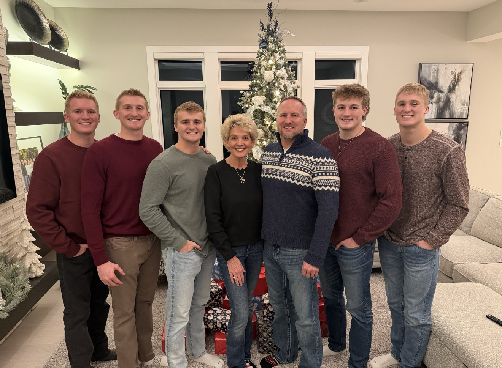

About Alex
I am a junior at the University of Iowa majoring in Business Analytics and Information Systems. I am passionate about using data and technology to help organizations make smarter business decisions and improve operations. I previously gained professional experience as a Data Analyst Intern at VGM Group, where I worked with data to support business insights and analytical projects. This summer, I will continue developing my professional experience as a Procurement Intern at Collins Aerospace in Cedar Rapids. I am originally from Dyersville, Iowa, home of the famous Field of Dreams and I bring a strong Midwest work ethic along with an interest in analytics, problem-solving, and business technology.

I grew up in Dyersville, Iowa, where I stayed active playing a variety of sports including baseball, soccer, football, and wrestling. Growing up with four brothers and supportive, hardworking parents helped shape my competitive mindset and strong work ethic. Today, two of my brothers work at John Deere, one works at Apple, and my youngest brother is currently in high school.
Skills Learned From Internship:
- Streamlined the query retrieval process, significantly increasing productivity for senior data analysts
- Reviewed 500+ SQL queries regularly used by data analysts to enhance data retrieval efficiency
- Identified and optimized frequently utilized queries, leading to improved performance and reduced processing time
Specific Skills:
- Tableau
- SQL
- Python
Additional Info
Enjoys AI
In my free time, I enjoy learning about artificial intelligence and exploring how it is shaping the future of technology and business. I like experimenting with AI tools and using them as a resource to better understand new technologies, coding concepts, and data-driven solutions.
Learning about my major
In my free time, I enjoy learning more about data and business analytics and how organizations use data to drive better decisions. I like exploring new analytical tools, reading about data-driven strategies, and practicing ways to interpret and visualize data effectively.
Collins Aerospace Intern, Summer 2026
I am currently preparing for my upcoming procurement internship at Collins Aerospace this summer in Cedar Rapids. I have been learning more about supply chain operations, procurement processes, and how large organizations manage supplier relationships. I am excited to gain hands-on experience and apply my analytics and business skills in a real-world environment.